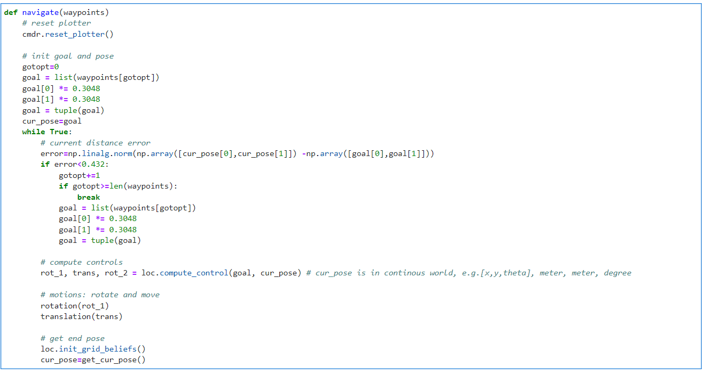
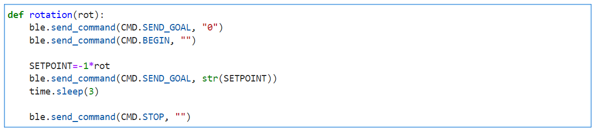
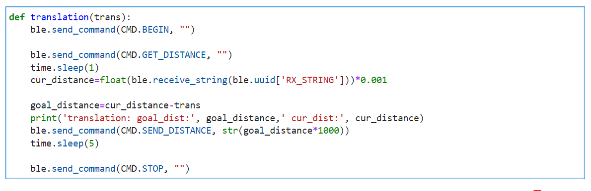
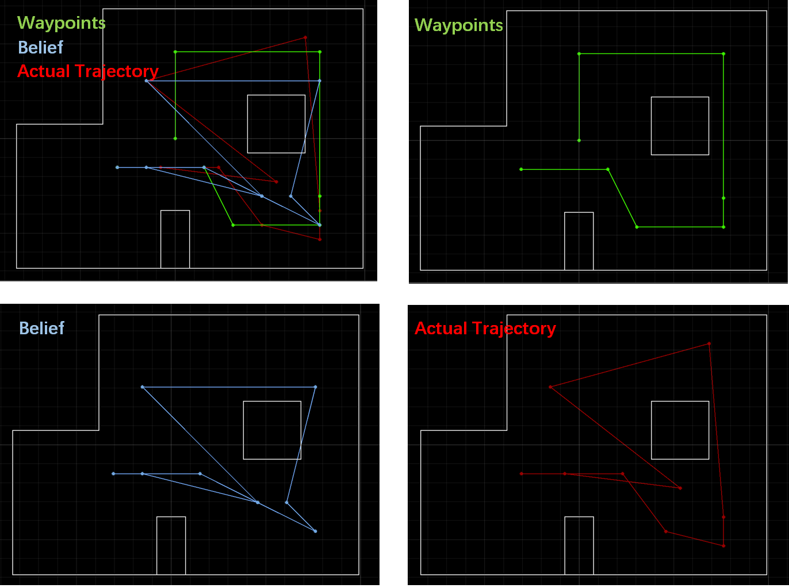

Navigation to Waypoints
Overall Strategy: Given waypoints, implement a closed-loop control on the real robot to make it navigate to all waypoints. During the process, the robot is able to compute the motion controls and execute them accurately.
Solution:● Put the robot on the start point, and input the list of waypoints
● Initilize the goal to be the first waypoint
● In the while loop:
First, calculate the position error. If the current position is close enough to the goal, change the goal to be the next waypoint and navigate to it.
Second, given current pose and goal, compute controls: rot1, trans, rot2.
Third, implement rotation and translation by sending BLE commands.
Forth, get current localization by an update step.
Break when robot visit all waypoints. Otherwise, go back to 'first'.
Navigate Program  I will introduce the functions and implementation of each module in detail below.
Localization
According to the Lab12, we could use a uniform prior to the pose and just run the update step using the sensor measurement data to localize it. The error was less than one grid along the x and y axes and 10 degrees in theta in most cases, which was acceptable. Hence, we decided to, like Lab12, just implement the update step for localization and only consider the error along the x and y axes. As for the close enough threshold, we set it to be 0.432 meters. That is, if the robot's current position is within the nine neighborhood grids of the goal, we will regard it as close enough to the waypoint and change the goal to be the next waypoint. We wrote a function namedget_cur_pose() to the localization part.
It firstly run the get_observation_data() wrote in Lab12, and excute the update step.
The current pose is the one with the highest belief.

Compute Control
Given the goal pose and the current pose, the robot is going to calculate the motions by itself. We used thecompute_control() function wrote in Lab11 to achieve this.
The motion model can be described as rotation1, translation, and rotation2.
Here is the related code.

Motion: Rotation
With a PID orientation controller, we can rotate the robot to the set angle precisely. Here, we just used P and D control, withKP = 1, KD = 0.1.
For more information, such as how motor input changes, you can view Lab6.
In the video below, the robot rotated 20° each time accurately.
SEND_SETPOINT,
and the robot will then do the motion accordingly.
Here is the related code.

Motion: Translation
To achieve the translation successfully, we used a distance controller. Similar to orientation controller, we implemented the P and D control, withKP = 0.022, KD = 0.012.
The Lab6 shows how we designed the controller.
In the video below, we set the stop distance to be 30 cm,
and the robot stoped when it was exactly 30 cm away from the wall using feedback from the ToF sensor.
translation(), which firstly get the current distance to the obstacle ahead by ToF sensor,
then calculate the stop_distance = cur_distance - translation and send it to Artemis,
and the robot move forward accordingly.
Here is the related code.

Demo
With the functions above, we can implement navigation. The localization is likely to be wrong for the first point, (-4, -3) feet , since it is too far away from the upper left obstacles, and the ToF sensor gets wildly inaccurate readings. Take the distance when theta is 45° as an example. The actual length is 3 m, while the measured distance is in the range [2.7,3.4] m and different at each measurement. Although we have used the average of ten distance measurements, it does not help much to locate at this point. Hence, we decided to give up this point and start from the second waypoint. Here is the demo and plots.
The figures above show that all but the last waypoints were reached with only one motion combination - rotation1 and translation. The last point missed is due to the error in ToF sensor readings. It estimeted the cur_pose, (-0.305m, 0.610m, -170°), and calculated the motions, (rot_1 = 106.5°, trans = 0.6815m, rot_2: 63.4349°), correctly. However, the distance measured was only 1.668 m, while the actual value is nearly 2.6m, thus resulting in moving too far away. Fortunately, after the localization, the robot found it was in the wrong place and went back to the final waypoint. Comparing the Belief and Actual Trajectory, we can tell that the localization is not perfect, usually one grid error along the x and y axes. We can add the prediction step to improve this, but it will take a longer time. For more information, please check the Logging Document.Path Planning
Overall Strategy: Create a roadmap, whose nodes are the given waypoints and the egdes are the connection between any two nodes that don't pass through the obstacle. Input the start point and the end point, and the output is the shorest path represented by nodes using dijkstra's algorithm.
We created a class namedGraph to create the roadmap, shown in the figure below.

1: (-2, -1) --> 7: (5, 3) --> 6: (5, -2). (unit: feet) By inputting those points into the
navigation(), the robot was able to navigate to node #6 with shorest path.